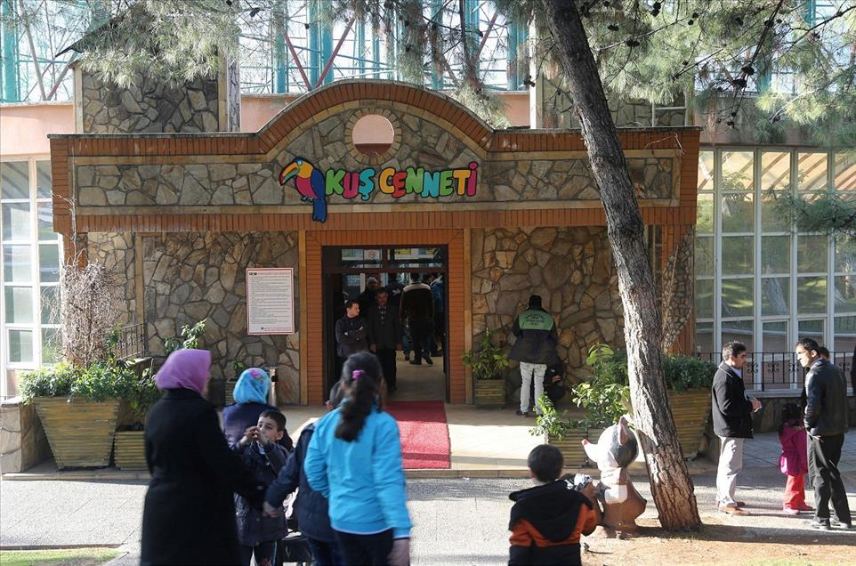

Gaziantep Hayvanat Bahçesi’nde kutlanan Dünya Kuş Günü, ziyaretçilere kuşların biyolojik çeşitliliğini ve ekolojik önemini tanıtmayı amaçlayan özel etkinliklerle gerçekleşir. Bu günde özellikle kuş kafesi ve açık gözlem alanlarında rehberli turlar düzenlenir; öğrenciler ve aileler farklı kuş türlerini yakından görerek onların yaşam biçimleri, beslenme alışkanlıkları ve göç davranışları hakkında bilgi edinir. Çocuklara yönelik kuş gözlem oyunları ve interaktif atölyelerle doğa sevgisi pekiştirilir, ayrıca kuş fotoğraf sergileri açılarak hem profesyonel hem de ziyaretçilerin çektiği kareler sergilenir. Rehberler, kuşların ekosistemdeki rolünü anlaşılır bir dille aktarırken, katılımcılar merak ettikleri soruları yöneltebilir. Etkinlik kapsamında bazı kuş türleri için besleme gösterileri yapılır ve çocuklar bu süreci yakından izleyerek kuşların doğal davranışlarını gözlemleme fırsatı bulur. Böylece Dünya Kuş Günü, Gaziantep Hayvanat Bahçesi’nde hem eğitici hem de eğlenceli bir kutlama olarak doğa bilincini artırır ve ziyaretçilere unutulmaz bir deneyim sunar.